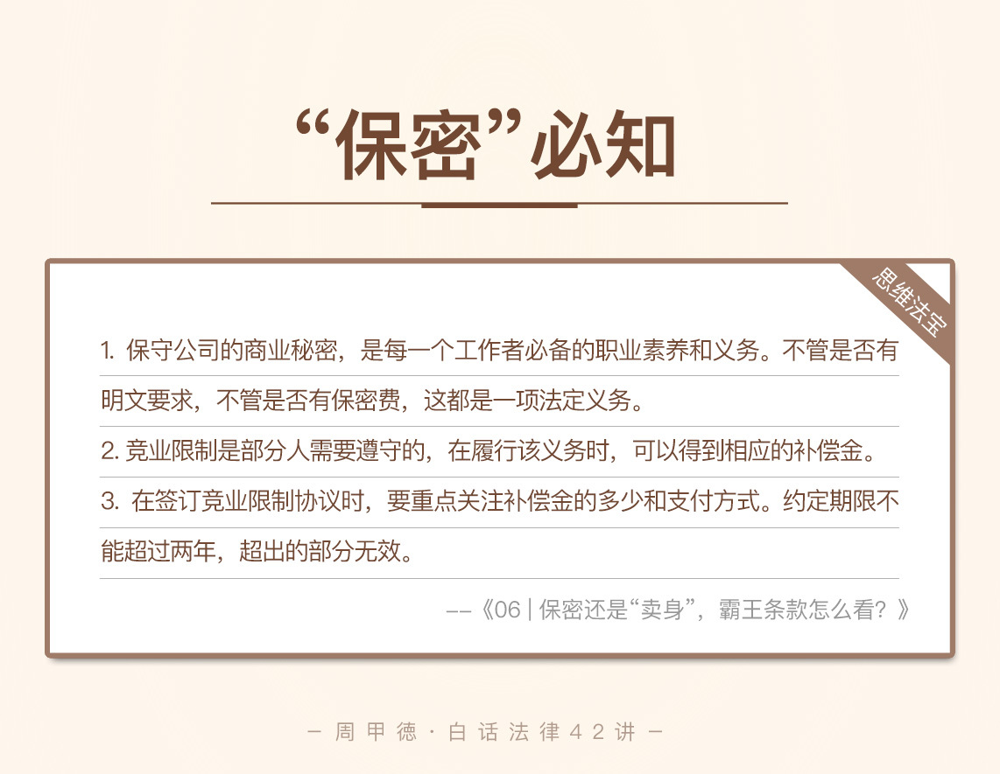

- 00 开篇词 这年头，你真应该懂点法律常识.md
- 01 “老周，我想知道” 常见法律认知盲区（一）.md
- 02 “老周，我想知道” 律师就在你身边（二）.md
- 03 “老周，我想知道” 律师就在你身边（三）.md
- 04 “老周，我想知道” 律师就在你身边（四）.md
- 05 创业未捷老板跑，社保工资哪里讨？.md
- 06 保密还是“卖身”，霸王条款怎么看？.md
- 07 编造流言蹭热度？看守所里降温度！.md
- 08 合同在手欠款难收，报警有用吗？.md
- 09 致创业：谁动了我的股权？.md
- 10 又见猝死！工“殇”究竟是不是工伤？.md
- 11 期权的“前世今生”.md
- 12 裁员面前，你能做的还有什么？.md
- 13 抄袭、盗图为什么做不得？.md
- 14 加班、工资、休假，你知道多少？.md
- 15 受贿原来这么“容易”.md
- 16 今天你用“VPN”了吗？.md
- 17 漏洞在眼前，可以悄悄破解吗？.md
- 18 “爬虫”真的合法吗？.md
- 19 非法集资到底是个啥？.md
- 20 黄色网站？不仅仅是“黄色”罪名.md
- 21 谁修改了我的积分资产？.md
- 22 外挂真能大吉大利吗？.md
- 23 如何看待“从删库到跑路”？.md
- 24 “伪基站”是你的避风港吗？.md
- 25 “网络诈骗”真的离你很远吗？.md
- 26 智斗中介：“北上广”租房图鉴.md
- 27 买买买！买房的“避坑”指南.md
- 28 闪婚又闪离，彩礼怎么理？.md
- 29 离婚还想和平？你要这么做.md
- 30 遗产继承的爱恨情仇.md
- 31 骗术升级？假结婚、假离婚的那些事儿.md
- 32 孩子学校受伤，谁之过？.md
- 33 如何让欠债还钱真正“天经地义”？.md
- 34 从透支到盗刷：人人须知的银行卡纠纷.md
- 35 远离“套路贷”的套路大全.md
- 36 危险！酒驾为什么被罚那么重？.md
- 37 老人倒地，“扶”“不服”？.md
- 38 “能动手就别吵吵”，代价你真的知道吗？.md
- 39 发生交通事故，如何处理？.md
- 40 交通事故综合法宝.md
- 41 婚姻家庭综合法宝.md
- 42 买卖房屋综合法宝.md
- 一键直达 法律专栏“食用”指南.md
- 加餐 “新冠肺炎”影响下，17个常见法律问题解答.md
- 结束语 法律，不会终止的篇章.md
06 保密还是“卖身”，霸王条款怎么看？
每年的“3·15”出现频率最高的词应该就是“霸王”，当然不是洗发水的那个，而是霸王协议或霸王条款。其中，最经典的一句“最终解释权归商家”，更是让我们多少人曾捶胸顿足，恨不得砸了店家的招牌。
事实上，日常生活中但凡存在格式合同，合同里基本都会有“霸王”的影子。在这里我解释一下格式合同，是指一方事先拟定好条款的合同，另一方只能表示全部同意或者不同意。类似我们注册某些软件账号时，遇到协议说明的“是否同意”选项，想要使用只能“同意”。
可是你见过去公司上班，也要被“霸王”的吗？
别说，还真有，我们一起来看看程序员小郑最近遇到的烦恼。
小郑前不久刚换了新的工作，公司的福利待遇等各方面都挺不错，所以人倒也挺开心。唯一不足的是，入职时签了一大堆的合同协议，其中，保密相关的事宜让小郑犯了愁：
虽说和公司签了保密相关的协议，可公司并不给任何费用作为补偿，几个协议都还要求永久有效。这样的永久真的合法吗？那要是以后换了工作，继续用现在公司写的代码，会承担责任吗？这种情况下，公司能拿这些协议来追责吗？
经过进一步了解，我发现，小郑目前的公司签合同很是严格，入职时签了《劳动合同》、《保密协议》和《竞业限制协议》整整三样。其中劳动合同签了三年，而保密协议和竞业限制协议都规定了永久期限。同时，后面两项协议都明确规定公司无需支付任何费用，小郑要无条件遵守。
且不提无条件遵守一事，单是看着协议上大大的“永久”两字，小郑心想，这是把自己给“卖”了吧？
看到这儿，我想你的疑惑也来了：
保密协议和竞业限制协议能约定永久期限吗？
签了保密协议和竞业限制协议，但公司不支付任何费用，那这俩协议还有约束力吗？
当然，还有我们小郑最直接的疑惑，如果离职后使用在以前单位写的代码，到底算不算违法呢？
同样的，我们先来了解一些基本概念，弄清楚这些协议究竟是什么。
法律知识
不管是保密协议还是竞业限制，都涉及到了商业秘密，也就是俗称的“商业机密”。商业秘密首先是秘密，秘密自然不能在社会上公开，不能被公众知晓，更重要的是，它能给公司方带来经济利益，具有商业价值，所以公司会采取相应的保密措施。
商业秘密一般包括技术信息和经营信息这两种，技术信息包括源代码、设计图纸、生产配方、关键数据等等，经营信息则包括客户名单、营销策略、管理方法、货源信息等。
公司为了保护商业秘密，通常会和员工在劳动合同中约定一些保密条款，或者是和员工另签一份保密协议。但是即使公司没有采取这些举措，员工也不能泄漏公司的商业秘密。
因为，保密义务对于员工来说是法定的义务。
如果泄漏了商业秘密，并因此给公司造成了经济损失，需要给公司赔偿。性质再严重点的，甚至可能会被追究刑事责任，已然属于侵犯商业秘密罪。
说完商业秘密和保密协议，我们再来看看不那么熟悉的竞业限制。竞业限制其实是用人单位（通常包括企业、个体经济组织、国家机关、事业组织、社会团体等，以下简称单位）与部分员工针对离职后的新工作所做的限制，通常包括新工作的范围、地域还有期限等内容，目的也是为了保护商业秘密。
这部分员工通常知晓本单位的商业秘密，一般包括三种人：
对本单位的经营有重大影响的高级管理人员；
掌握核心技术的高级技术人员；
其他有保密义务的人。
竞业限制通常限定，这些人在离职后，在一定期限内不能去竞争对手家工作，比如那些生产同类产品的，经营同类业务的，或者有其他竞争关系的；也不能自己成为原单位的竞争对手，独自去生产同类产品或是经营同类业务。
可想而知，可口可乐家的核心研发人员基本上是不能立刻跳槽到百事了，阿里的首席工程师也难以直接跳槽到腾讯去做骨干了。
需要知道的是，竞业限制约定的期限不得超过二年。即使协议中约定了再长的时间，超过两年的部分都是无效的。
另外，员工在离职后履行了竞业限制协议里的义务，单位应当给一定的经济补偿。至于补偿金的数额，如果有约定好的数额和支付方式，就按约定来执行。
如果没有明确约定，在竞业限制期限内，单位应按月给员工补偿，金额一般为员工离职前十二月的平均工资的30%，比如说你离职前平均工资是每月8000元，补偿金就是每月2400元。而这笔钱如果低于当地的最低工资标准，则应该按照当地的最低工资标准来支付。
协议签订后，若单位耍赖不给钱，达到一定期限后（注：各地规定不同，多为三个月）员工也是可以要求解除竞业限制的。若员工出尔反尔不守约定，也应该按照约定向单位支付违约金。
记住，在竞业限制协议一事上，单位和员工双方都是既有权利，又有义务。
情景分析
现在再来看我们开头的故事，你的疑惑应该得到了解答。
第一个问题，这两个协议能否限定永久期限？答案需要我们分开来看。
遵守保密协议属于法定义务，不管在职还是离职状态，只要是在工作期间获得的商业秘密，员工都有保密的义务。所以不管写的是“永远”还是“定期”，小郑都不能泄漏出去或者私自使用。
而竞业限制协议则不能约定永久，超过两年的部分无效。
第二个问题，公司不给钱的话两个协议是否有效？同样我们要分开看。
对于保密协议来说，法律上并没规定公司必须支付所谓的保密费，只不过一些公司为了更好地保护商业秘密，主动提出给钱。所以，如果约定过就按约定来，如果没有约定过，不给也是合法的，小郑同样得履行保密义务。
而竞业限制协议，对双方都具有法律约束力。如果未来哪一天离职，小郑自然应在离职后的两年内遵守。但是公司不给补偿金并不合规定，不给钱还要求员工遵守，典型的“又想马儿肥，又想马儿不吃草”，可不就是“霸王”了吗？小郑可以起诉公司要求补偿，也可以因此请求解除限制。
至于最后一个问题，离职后能不能用在老东家那儿写的代码？显然，小郑所掌握的公司的代码，如果是属于商业秘密的源代码，小郑并不能直接使用，否则可能构成侵权行为而被追责。
其实，我们也能看出来，公司方面确实有些问题，小郑需要及时找公司处理。但是整体上，对小郑来说，只要他道德及格，不去故意泄露商业秘密，是不存在所谓“卖身”问题的。
思维“法”宝
现在确实存在某些单位滥用保密协议、竞业限制的现象，甚至有些公司想把一切工作都归为商业秘密，对员工要求这啊那的。这既不合理，也不合法。我们需要有一双会甄别的眼睛，来界定利益和法律，而不是听之任之。
最后，我来总结一下今天的内容。
保守公司的商业秘密，是每一个工作者必备的职业素养和义务。不管是否有明文要求，不管是否有保密费，这都是一项法定义务。
但事实上，判定员工是否构成侵权泄密，并不在于协议约定了什么，而在于这部分内容确实属于公司的商业秘密。只要属于商业秘密，相关人员都具有保密义务，泄漏或私自使用都是违法的。
竞业限制方面，首先看自己需不需要遵守。如果确实应该遵守，在履行义务的同时，也别忘了自己的权利——相应的经济补偿。所以，在签订协议时，重点关注的便是补偿金的多少和支付方式。至于约定期限，自是不能超过两年。

- 今天的知识主要就是这些了。讲到这里，相信对于商业秘密、保密协议和竞业限制的内容，你都不再陌生，也不会轻易栽跟头，我的目的也就达到了。那么此前，职场上你还见过其他的奇葩协议吗？或者是签过类似的条款而被坑吗？欢迎留言与分享，学法之路有我同行。
© 2019 - 2023 Liangliang Lee. Powered by gin and hexo-theme-book.